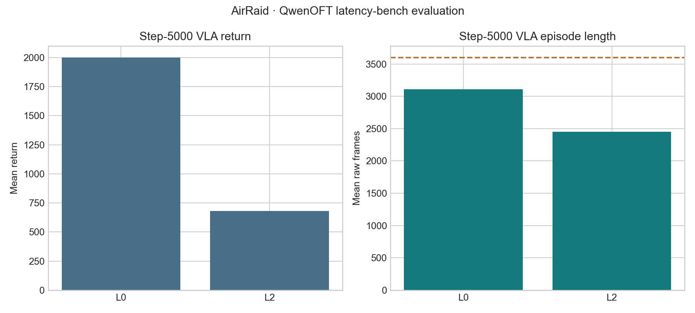

Observation path
The small model receives (4,84,84) uint8; native rendering remains (250,160,3) RGB.
latency-sensitive-bench / verified release example
A verified PAL AirRaid adaptation using a native six-action catalog, raw-frame scheduling, Atari APPO, seeded random-noop resets, and FireReset evaluation.
01 · Outcome
The small model receives (4,84,84) uint8; native rendering remains (250,160,3) RGB.
Atari APPO completed 10,006,528 raw environment frames at zero action latency.
Ten deterministic episodes used seeded 1–30 NOOP reset steps followed by FireReset.
One hundred gated teacher episodes, native six-action conversion, 5k-step QwenOFT training, and L0/L2 evaluation are complete.
convnet_atari, frame stack 4, and the checkpoint's obs_scale=255. Using obs_scale=1 collapsed deterministic actions to NOOP.02 · Frozen contract
ALE/AirRaid-v5, ALE 0.8.1, mode 1, difficulty 0.(250,160,3) uint8.noop_max=0.noop_max=30 plus FireReset; VLA rows contain one current RGB image and no context images.observation_stride = 50 / 12.5 = 4 raw frames · latency_raw_frames = 0
env:
name: gymnasium
task_name: air_raid
env_id: LatencyBench/AirRaid-v0
env_fps: 50
obs_fps: 12.5
frame_stack: 4
action_order: [noop, fire, right, left, rightfire, leftfire]
latency:
method: zero
evaluation:
noop_max: 30
fire_reset: true
deterministic: true
eval_episodes: 10
eval_max_steps: 360003 · Training
| Field | Value |
|---|---|
| Algorithm | APPO |
| Encoder | convnet_atari, ReLU |
| Parallelism | 16 workers × 8 envs, 2 worker splits |
| Rollout / batch | 32 / 1024 |
| Optimization | 4 epochs, 4 batches per epoch |
| Learning rate | 2.5e-4, linear decay |
| Entropy coefficient | 0.01 |
| Observation scale | 255 |
| Best training moving average | 10,593 |
Best checkpoint: outputs/examples/gymnasium_air_raid/checkpoints/gymnasium_air_raid_zero_latency_atari_official_fast_10m/checkpoint_p0/best_000038656_9895936_reward_10593.000.pth.

04 · Evaluation
| Episode | Seed | Return | Raw steps |
|---|---|---|---|
| 0 | 104729 | 2,300 | 3,600 |
| 1 | 104730 | 3,050 | 3,600 |
| 2 | 104731 | 2,050 | 3,600 |
| 3 | 104732 | 3,150 | 3,600 |
| 4 | 104733 | 2,125 | 3,600 |
| 5 | 104734 | 3,150 | 3,600 |
| 6 | 104735 | 1,825 | 3,600 |
| 7 | 104736 | 2,125 | 3,600 |
| 8 | 104737 | 2,950 | 3,600 |
| 9 | 104738 | 2,850 | 3,600 |
Mean return 2,557.5; standard deviation 491.81; mean length 3,600 raw frames.

05 · Teacher data and VLA
context_window=0 and one current 224×224 RGB image.discrete_ce, batch 16×1, 5,000 steps.| Latency | Mean return | Std | Mean length | Full episodes |
|---|---|---|---|---|
| L0 | 2,000.0 | 706.13 | 3,106.9 | 15 / 20 |
| L2 | 681.25 | 277.92 | 2,449.75 | 2 / 20 |

06 · Verification
A reset probe confirms FIRE and RIGHT are applied after random NOOP initialization.
Train and eval both expose (4,84,84) to the policy.
Train and eval both use obs_scale=255.
AirRaid, Gymnasium adapter, and Sample Factory integration tests pass together.
07 · Evidence
config · log · evaluation
metadata · filter report · manifest · mixture


08 · Limits
noop_max=0; the new teacher dataset and all reported evaluation use random-noop 30 plus FireReset.